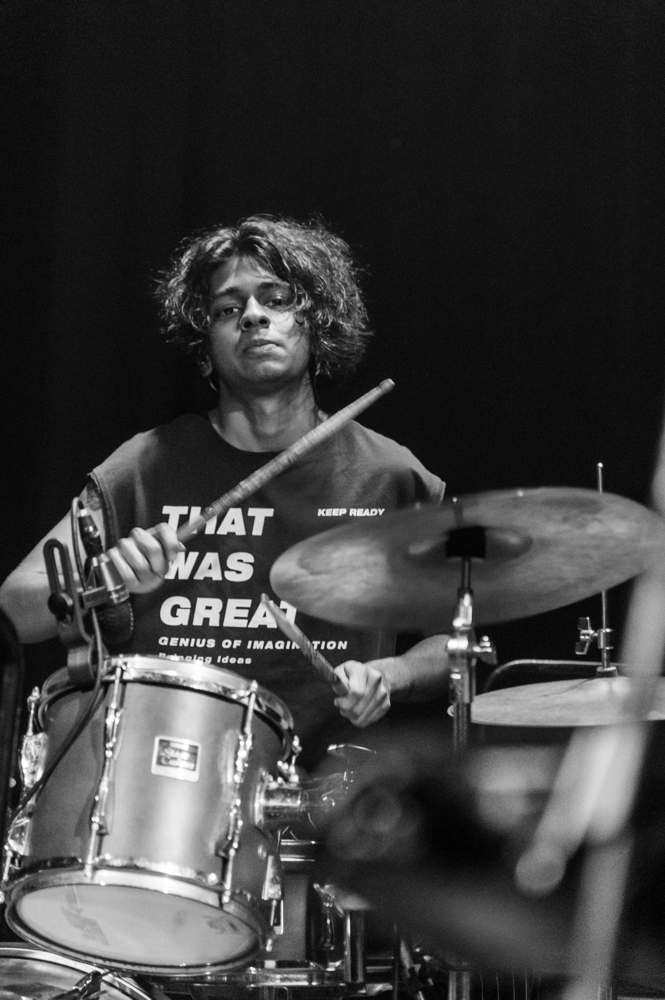
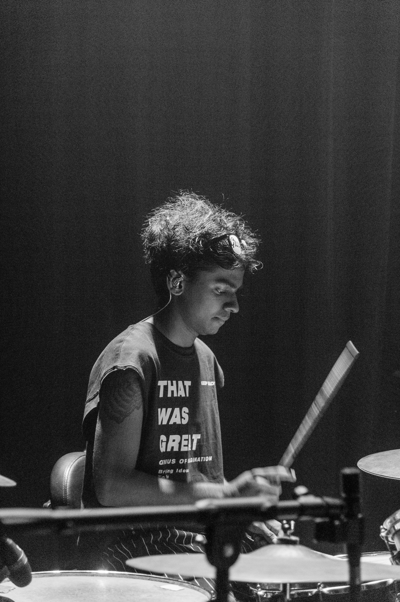

A drummer's instinct, a producer's ear, and a restless ear for genre — all from behind one kit.
Aditya Rao is a drummer, producer, and multi-instrumentalist from Chennai, India. He has spent years at the center of the country's live circuit — behind the kit and in the studio — performing at festivals including VH1 Supersonic and Magnetic Fields.
Equally at home writing and producing as he is playing, Aditya moves fluidly between indie pop, alternative rock, metal, hip-hop, funk and jazz. As the drummer and songwriter behind his own project MANGAS, and as a collaborator across a wide range of artists, he brings a producer's sense of arrangement and a live performer's instinct to every room he plays — precise, dynamic, and built for the song.
| Artist / Project | Timeline | Genre |
|---|---|---|
| MANGAS | 2021 — present | Punk / Alt-Rock |
| Artist / band name | 20XX — 20XX | Genre |
| Artist / band name | 20XX — 20XX | Genre |
| Artist / band name | 20XX — 20XX | Genre |
| Artist / band name | 20XX — 20XX | Genre |
One kit, a different vocabulary every time.
I've never been able to sit inside one genre. One month it's the restraint of indie pop, the next it's the weight of metal, then something built on a funk or hip-hop pocket. Moving between projects — and between instruments — is how I learned to listen.
Producing taught me to hear the whole arrangement instead of just my part; songwriting taught me when to hold back. Behind the kit, that means playing for the song first — the same hands, a different vocabulary every time. Every band I join rewires how I play the next one.